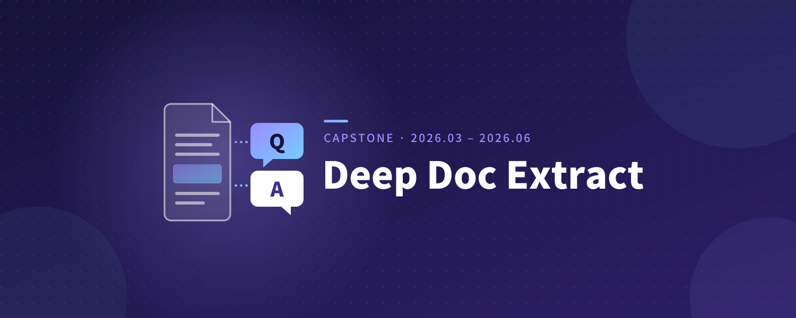
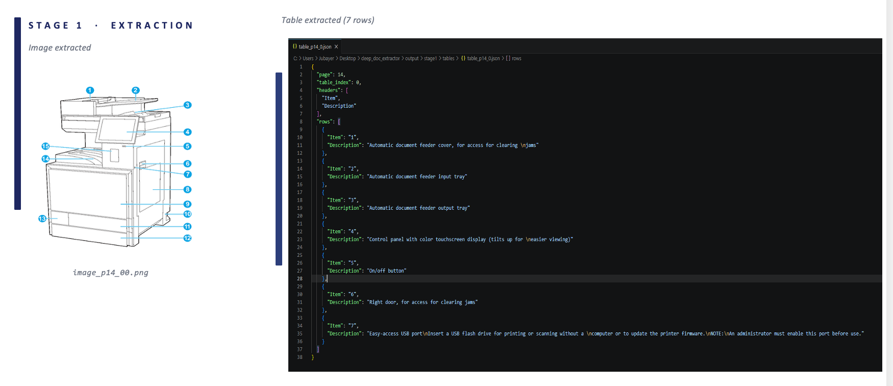
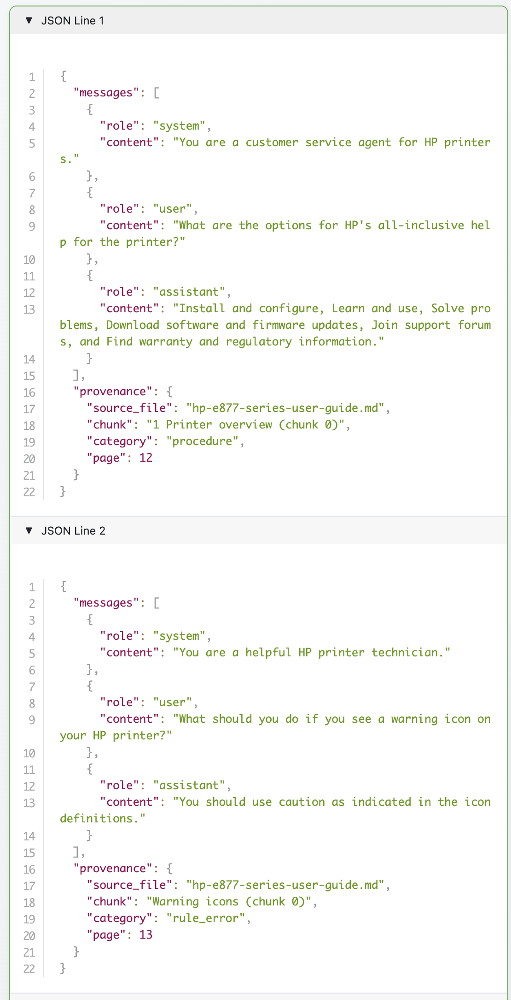
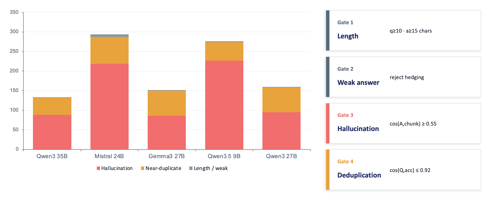
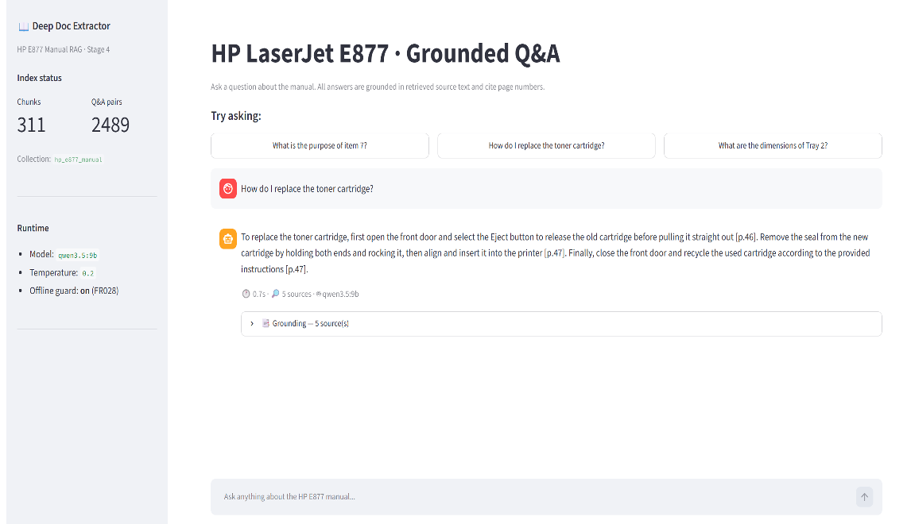

Deep Doc Extract 자동화
2026.03 – 2026.06 · 캡스톤디자인 팀 프로젝트 (Team DocuForge)

프로젝트 소개
캡스톤디자인 팀 프로젝트(HP 매뉴얼 대상)의 공개용 소스로, PDF 기술 문서를 Markdown으로 구조화하고 로컬 LLM으로 학습용 Q&A를 생성·증강한 뒤 RAG 검색으로 확인하는 4단계 파이프라인입니다.
핵심 구현
-
pdfplumber·Camelot로 PDF의 텍스트·이미지·표를 추출해 Markdown으로 정리합니다.

1단계 · PDF에서 추출한 이미지와 표 -
문서를 청킹하고 Ollama로 출처를 포함한 Q&A JSONL을 생성합니다.

2단계 · 출처가 포함된 Q&A JSONL 예시 -
질문 재표현 후 길이·언어·약한 답변·원문 관련성·중복 필터를 적용합니다.

3단계 · 질문 증강 후 적용한 품질 필터 -
문서 청크와 Q&A를 ChromaDB에 인덱싱하고 임베딩 검색·Streamlit 답변 화면으로 연결합니다.

4단계 · Streamlit의 근거 기반 Q&A 화면
담당 역할
HP 매뉴얼 이미지 분류와 질문 데이터 증강을 맡았습니다.
기술
Python · pdfplumber · Camelot · Ollama · ChromaDB · 임베딩 · Streamlit · JSONL
설계에서 고려한 점
검색 점수 기준을 적용하고 높은 점수의 Q&A 일치를 우선할 수 있도록 구성했습니다. 적합한 근거가 없으면 답변 거절 경로로 연결합니다. 단계별 설정과 실행을 분리해 생성·증강·검색을 각각 점검할 수 있습니다.
검증 결과와 한계
예제 PDF 1페이지의 텍스트 요소 9개 추출, Stage 3 오프라인 검사 6개 그룹, Stage 4 오프라인 검사 6개 그룹 통과가 있습니다. 실제 Ollama 생성·ChromaDB 인덱싱·브라우저 흐름·검색 품질 평가는 별도입니다. 스캔 PDF OCR은 현재 설정에서 비활성화되어 있습니다.